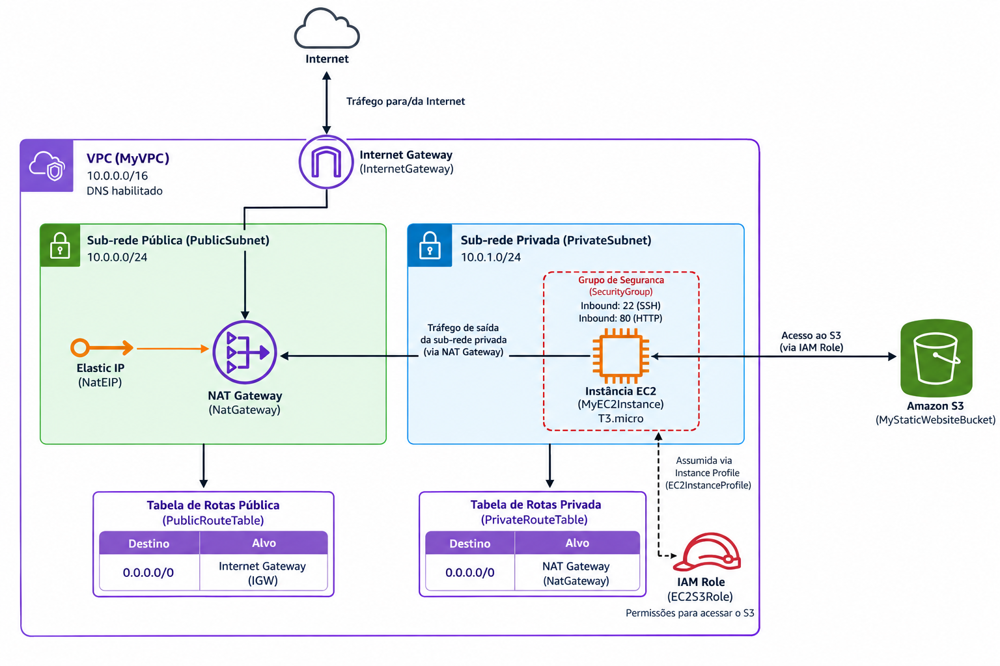

Objetivo da Arquitetura Automatizada
Este laboratório demonstra a implementação prática de uma infraestrutura robusta, segura e escalável na nuvem da AWS utilizando o AWS CloudFormation. O objetivo central é provisionar de forma automatizada e idempotente todos os recursos necessários para uma aplicação web corporativa com isolamento de rede, garantindo conformidade, repetibilidade e agilidade no deploy.
Segurança por Padrão
Isolamento de sub-redes e regras restritas de firewall.
Automação Total
Deploy completo via template YAML/JSON com UserData.
Repetibilidade
Recriação do ambiente sem intervenção manual.
Topologia da Arquitetura da Solução

Componentes Provisionados no Template
Detalhamento dos recursos criados pelo CloudFormation na AWS.
VPC e Sub-rede Privada
Criação de uma Virtual Private Cloud dedicada com bloco CIDR isolado e configuração de sub-redes privadas para maior segurança de dados sensíveis e cargas de trabalho internas.
Internet Gateway
Anexo de gateway de internet e configuração de tabelas de rotas para habilitar a conectividade externa controlada e o acesso aos serviços da AWS necessários para a pilha.
Security Group (Portas 22 e 80)
Grupo de segurança configurado com regras de firewall estritas, liberando tráfego SSH (porta 22) para administração remota segura e HTTP (porta 80) para tráfego web.
Instância EC2 (T3.micro)
Instância computacional provisionada com script automatizado
(UserData) para instalação de pacotes, dependências e servidor web no
boot inicial.
Bucket S3 para Arquivos Estáticos e Imagens
Repositório de armazenamento de objetos altamente durável e seguro, configurado via CloudFormation para hospedar ativos estáticos, imagens e assets consumidos pela aplicação hospedada na EC2.